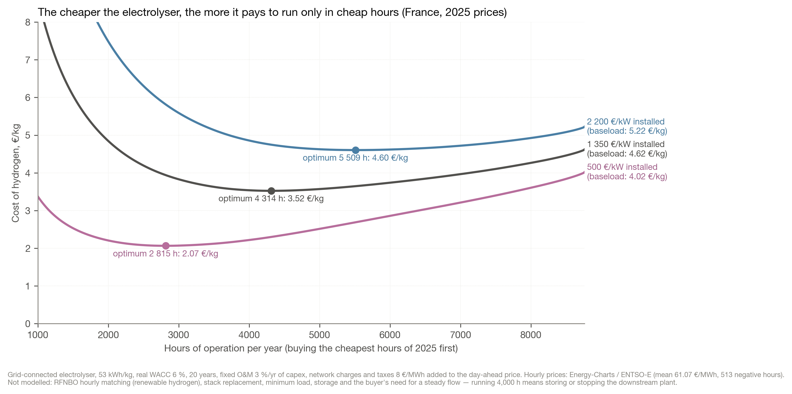
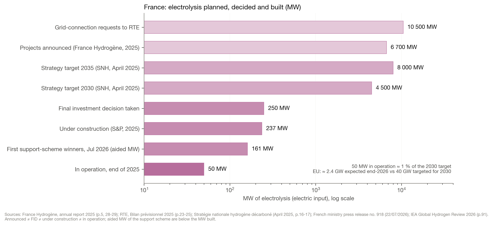

L'hydrogène : à quoi il sert, comment on le produit, ce qu'il coûte
À quoi sert l'hydrogène aujourd'hui (103 Mt dans le monde : raffinage, ammoniac, méthanol), comment on le produit au gaz (≈ 10 kg de CO₂ par kg) ou par électrolyse (≈ 53 kWh par kg), et ce que coûte un kilogramme d'électrolyseur selon le prix de l'électricité, les heures de fonctionnement et le prix de la machine (5 à 8 €/kg contre 2 à 3 pour le gaz). La note chiffre l'électricité que demanderaient l'acier, l'e-kérosène et la chaleur, donne quatre questions pour séparer un usage pertinent d'un usage douteux, et dit ce que cela change pour les mini-projets hydrogène et acier du cours.
1. La question et la réponse
La question. On entend que l’hydrogène va décarboner l’industrie. À quoi sert-il aujourd’hui, que coûte-t-il quand on le fabrique avec de l’électricité, et pour quels usages cela vaut-il la peine ?
La réponse, en trois phrases. L’hydrogène est déjà un grand produit industriel, environ 100 millions de tonnes par an dans le monde, qui sert à raffiner le pétrole et à fabriquer de l’ammoniac et du méthanol, et il est presque entièrement tiré du gaz et du charbon, avec environ 10 kg de CO₂ par kilogramme. Le produire par électrolyse demande environ 53 kWh d’électricité par kilogramme, et son coût dépend de trois curseurs liés entre eux : le prix de l’électricité, le nombre d’heures où l’électrolyseur tourne et le prix de l’électrolyseur, ce qui donne aujourd’hui 5 à 8 €/kg contre 2 à 3 €/kg pour l’hydrogène fossile. Les usages pertinents sont d’abord ceux qui consomment déjà de l’hydrogène fossile, les usages nouveaux (acier, carburants de synthèse, chaleur) demandent beaucoup d’électricité et ne sont pas tous justifiés.
Le plan. La section 2 dit à quoi sert l’hydrogène, les sections 3 et 4 comment on le produit, au gaz puis à l’électricité. La section 5 calcule le coût de l’hydrogène d’un électrolyseur, la section 6 l’électricité des usages futurs. La section 7 sépare les usages pertinents des usages douteux, la section 8 dit ce que cela change pour les mini-projets du cours.
2. À quoi sert l’hydrogène aujourd’hui
L’hydrogène (H₂) n’est presque jamais un carburant. C’est un intrant chimique : une matière première qu’on fait réagir avec autre chose.
- Raffinage. On retire le soufre des carburants (la désulfuration) et on casse les molécules lourdes du pétrole en molécules plus légères (l’hydrocraquage).
- Ammoniac. Le procédé Haber-Bosch combine l’azote de l’air et l’hydrogène (N₂ + 3 H₂ → 2 NH₃). L’ammoniac sert surtout à fabriquer des engrais azotés.
- Méthanol. On combine de l’hydrogène avec du monoxyde ou du dioxyde de carbone. Le méthanol est une base de la chimie (plastiques, colles, solvants).
- Fer préréduit. Dans une réduction directe (en anglais direct reduced iron, DRI), un gaz riche en hydrogène retire l’oxygène du minerai de fer.
| Monde, 2025 (AIE) | France (RTE) | |
|---|---|---|
| Consommation | 103 Mt/an | ≈ 1 Mt/an |
| Raffinage | 44 Mt | 60 % |
| Ammoniac et engrais | ≈ 34 Mt | 25 % |
| Méthanol, chimie | ≈ 17 Mt | 10 % |
| Fer préréduit (acier) | ≈ 6 Mt | 1 % |
L’Europe consomme environ 7 % de l’hydrogène mondial (AIE, 2026). Les chiffres français datent de 2018-2019 (RTE, 2020).
En France, trois chiffres qui ne se contredisent pas. La statistique publique compte 237 kt d’hydrogène pur produit en 2024 (SDES, 2025). RTE compte environ 1 Mt en incluant l’hydrogène en mélange et celui qui sort comme coproduit d’autres procédés (RTE, 2020). La stratégie nationale retient environ 400 kt produites par des vaporeformeurs, la seule part qu’un électrolyseur peut remplacer directement (Gouvernement, 2025). Il faut toujours dire lequel on cite.
Décarboner l’existant suppose que l’existant survive. L’usine d’ammoniac de Grandpuits, environ 30 % des engrais français, s’est arrêtée en janvier 2025, et environ 66 % des engrais azotés consommés en France sont importés (France Hydrogène, 2026).
3. Comment on le produit aujourd’hui : le gaz
La production mondiale vient à 61 % du gaz naturel sans captage du CO₂, à 22 % du charbon et à 15 % de coproduits. L’hydrogène dit bas-émissions ne fait qu’environ 1 Mt, moins de 1 % du total. L’ensemble émet environ 1 000 Mt de CO₂ par an (AIE, 2026).
Le vaporeformage du méthane (en anglais steam methane reforming, SMR) fait réagir le méthane du gaz naturel avec de la vapeur d’eau, à haute température. Le bilan s’écrit CH₄ + 2 H₂O → CO₂ + 4 H₂. Le CO₂ est produit par la chimie elle-même : même un four parfait en rejetterait environ 5,5 kg par kg d’hydrogène (44 g de CO₂ pour 8 g d’hydrogène). Il faut y ajouter le gaz brûlé pour chauffer les tubes du réacteur.
- À la cheminée : environ 9 kg de CO₂ par kg d’hydrogène.
- En comptant l’extraction et le transport du gaz : environ 11 kg, avec des fuites de méthane de l’ordre de 0,5 % (Bauer et al., 2022).
- Recoupement français : les vaporeformeurs produisent environ 400 kt par an et émettent plus de 4 Mt de CO₂, soit environ 10 kg par kg (Gouvernement, 2025).
Le coût est bas parce que le gaz est bon marché : un peu plus de 2 €/kg en Europe en 2025 (ACER, 2025), 2,86 €/kg en France en 2024 (Observatoire européen de l’hydrogène, 2025).
Capter le CO₂. On peut capter le CO₂ du vaporeformage, et l’on parle alors d’hydrogène « bleu ». Capter le seul CO₂ de procédé est commercial ; un taux de captage supérieur à 90 % ne l’est pas : le reformage autotherme avec captage (ATR + CCS) n’est qu’au niveau de maturité technologique (TRL) 5 sur 9 selon l’AIE (2026). Coût : 2,8 €/kg hors transport et stockage du CO₂ en Europe (ACER, 2025), 3,6 €/kg en France (Observatoire européen, 2025). Voir la note Capter le CO₂.
4. Comment on le produit avec de l’électricité : l’électrolyse
L’électrolyse sépare l’eau en hydrogène et en oxygène avec un courant électrique. Un électrolyseur industriel consomme environ 53 kWh d’électricité par kilogramme d’hydrogène, en comptant toute l’installation (AIE, 2026).
Le rendement. Un kilogramme d’hydrogène contient 33,3 kWh au pouvoir calorifique inférieur (PCI, la chaleur de combustion quand l’eau produite reste en vapeur). Le rendement est donc de 63 % sur le PCI. Sur le pouvoir calorifique supérieur (PCS, eau condensée), il est de 74 %. Toujours dire sur quelle base on parle.
Les technologies. Les électrolyseurs alcalins et à membrane échangeuse de protons (PEM) sont commerciaux (TRL 9) ; l’électrolyse haute température (SOEC) est au TRL 8 (AIE, 2026). Plus de 4 GW étaient installés dans le monde fin 2025, aux deux tiers en Chine (AIE, 2026).
Des mégawatts aux tonnes. La production annuelle s’écrit :
tonnes par an = puissance (MW) × heures de fonctionnement ÷ consommation (kWh/kg)
Un électrolyseur de 200 MW qui tourne 7 000 h et consomme 53 kWh/kg produit environ 26 kt par an. Normand’Hy, le plus grand projet français (Air Liquide, Port-Jérôme), annonce 200 MW pour 28 kt par an.
Le prix de l’électrolyseur. Un électrolyseur occidental installé coûte 1 920 à 2 500 $/kW en 2025 (≈ 1 700 à 2 200 €/kW), un électrolyseur chinois installé en Chine 550 à 1 100 $/kW (AIE, 2026). L’empilement de cellules (le stack) ne fait que 5 à 20 % du coût installé ; l’ingénierie, la construction et les aléas en font plus de la moitié (ACER, 2025). Un prix de stack n’est donc pas un prix d’usine.
« Vert » est une propriété de l’électricité, pas de la machine. À 53 kWh/kg, l’électrolyse n’émet moins que le vaporeformage (environ 11 kg de CO₂ par kg) que si l’électricité émet moins de 210 g de CO₂ par kWh environ (11 ÷ 53). Sur le réseau français (environ 56 g/kWh), l’hydrogène émet environ 3 kg de CO₂ par kg ; sur la moyenne européenne (environ 240 g/kWh), environ 12,7 kg, plus que le vaporeformage qu’il remplace. L’Union européenne définit deux labels : un hydrogène bas carbone émet au plus 3,38 kg de CO₂ équivalent par kg (−70 %), un hydrogène renouvelable (en anglais renewable fuel of non-biological origin, RFNBO) doit en plus provenir d’électricité renouvelable, avec des règles de temps et de lieu (règlement délégué (UE) 2023/1184 ; acte délégué (UE) 2025/2359).
Ce que l’Europe impose, et à qui. RED III fixe aux États 42 % d’hydrogène renouvelable dans l’hydrogène de l’industrie en 2030, 60 % en 2035, sans celui qui sert à fabriquer des carburants (directive (UE) 2023/2413, art. 22 bis) : l’hydrogène d’une raffinerie n’y entre pas. Renouvelable, il compte double pour l’objectif transport (art. 25 et 27), et rapporte en France des certificats aux vendeurs de carburants (TIRUERT, puis IRICC en 2027). L’hydrogène du gaz paie déjà ses quotas de CO₂.
5. Ce que coûte l’hydrogène d’un électrolyseur
5.1 Trois postes et une formule
Le coût d’un kilogramme (en anglais levelised cost of hydrogen, LCOH) additionne trois postes.
- L’électricité : 53 kWh × le prix payé. À 70 €/MWh, 3,7 €/kg.
- Le capital : le prix de l’électrolyseur, transformé en une annuité (un paiement annuel constant qui rembourse l’investissement et le rémunère), puis divisé par les kilogrammes produits dans l’année. Plus l’électrolyseur tourne d’heures, plus ce poste baisse.
- L’exploitation : l’entretien (environ 3 % du prix par an) et le remplacement du stack, usé après environ 50 000 heures (AIE, 2026).
Un kilowatt d’électrolyseur produit chaque année (heures ÷ 53) kilogrammes. Le facteur de charge est la part des 8 760 heures de l’année où il tourne.
Un calcul d’illustration. Avec 1 950 €/kW, 25 ans, un taux de 8 %, 3 % d’entretien et le stack remplacé pour 30 % du prix tous les 50 000 h :
| Prix de l’électricité | Facteur de charge | Capital | Exploitation | Électricité | Total |
|---|---|---|---|---|---|
| 70 €/MWh | 50 % | 2,2 €/kg | 1,1 €/kg | 3,7 €/kg | 7,0 €/kg |
| 70 €/MWh | 90 % | 1,2 €/kg | 0,8 €/kg | 3,7 €/kg | 5,8 €/kg |
| 30 €/MWh | 50 % | 2,2 €/kg | 1,1 €/kg | 1,6 €/kg | 4,9 €/kg |
| 30 €/MWh | 90 % | 1,2 €/kg | 0,8 €/kg | 1,6 €/kg | 3,7 €/kg |
Ce sont les hypothèses de l’outil web de décarbonation de l’industrie du cours, alignées sur l’AIE (2026). Avec un électrolyseur chinois installé en Chine (≈ 490 à 970 €/kW), la première ligne tombe à 4,8 à 5,7 €/kg.
5.2 Le prix et les heures vont ensemble
Le tableau traite le prix et le facteur de charge comme deux curseurs indépendants. Ils ne le sont pas. Un électrolyseur qui tourne en permanence (en ruban) paie le prix moyen de l’année ; s’il choisit de ne tourner qu’aux heures les moins chères, il paie moins cher son électricité, mais amortit son capital sur moins de kilogrammes. Un prix de 70 €/MWh est un prix de ruban : il va avec un facteur de charge d’environ 90 %, pas de 50 %.

La figure range les 8 760 prix horaires français de 2025 (61 €/MWh en moyenne, plus de 500 heures à prix négatif) du moins cher au plus cher, et calcule le coût de l’hydrogène quand l’électrolyseur n’achète que les N premières heures (taux de 6 %, 20 ans, réseau et taxes 8 €/MWh).
- À 500 €/kW, l’optimum est vers 2 800 h : 2,1 €/kg, contre 4,0 €/kg en ruban.
- À 1 350 €/kW, vers 4 300 h : 3,5 €/kg, contre 4,6 €/kg.
- À 2 200 €/kW, vers 5 500 h : 4,6 €/kg, contre 5,2 €/kg.
Plus l’électrolyseur est cher, plus il doit tourner, et moins la flexibilité rapporte. Le gain dépend aussi de l’année : à 1 350 €/kW, choisir ses heures faisait gagner 1,5 % en 2019, quand les prix variaient peu, et 24 % en 2025, avec les heures solaires à prix nul ou négatif.
La limite du calcul. L’usine qui achète l’hydrogène veut un débit régulier. Tourner 4 000 h par an, c’est stocker l’hydrogène ou arrêter l’usine. RTE estime la valeur de la flexibilité à environ 10 €/MWh en moyenne, et jusqu’à 2 €/kg avec un stockage de 1 000 heures en cavité saline (RTE, 2024).
5.3 Le réseau, les taxes et la règle horaire
Un électrolyseur raccordé au réseau paie aussi l’acheminement de son électricité. Pour l’électrolyse sur réseau en France à 4 000 h, l’Observatoire européen de l’hydrogène (2025) trouve 5,30 €/kg : capital 2,76, électricité 1,18, tarif de réseau (TURPE) 0,85, taxes 0,32, divers 0,19. Voir la note Tarifs de réseau.
L’hydrogène renouvelable ajoute une contrainte : jusqu’à fin 2029, l’électricité renouvelable achetée doit correspondre à la production d’hydrogène dans le même mois ; à partir de 2030, dans la même heure (les heures à moins de 20 €/MWh restent admises). Avec des contrats éoliens et solaires, cette règle plafonne le facteur de charge vers 70 % (RTE, 2024).
5.4 Les coûts constatés
| Hydrogène | Coût | Source |
|---|---|---|
| Vaporeformage | 2,1 (UE, 2025) à 2,9 €/kg (France, 2024) | ACER ; Observatoire européen |
| Vaporeformage avec captage | 2,8 à 3,6 €/kg | ACER ; Observatoire européen |
| Électrolyse sur réseau, France, 4 000 h | 5,3 €/kg | Observatoire européen |
| Offres à la Banque européenne de l’hydrogène, 2026 | 6,9 €/kg en médiane (France 6,7) | Commission européenne |
| Hydrogène renouvelable (RFNBO), UE 2025 | ≈ 8 €/kg (7 à 10 selon le pays) | ACER |
L’hydrogène électrolytique coûte donc 2,5 à 4 fois l’hydrogène fossile.
6. L’électricité que demanderaient les usages futurs
Chaque kilogramme demande 53 kWh. Une tonne demande donc 53 MWh, et un million de tonnes 53 TWh.
| Usage | Hydrogène | Électricité |
|---|---|---|
| Remplacer l’hydrogène des vaporeformeurs français | ≈ 400 kt/an | ≈ 21 TWh/an, ≈ 5 % des 438 TWh consommés en France en 2024 |
| Remplacer tout l’hydrogène mondial | 103 Mt/an | ≈ 5 500 TWh/an, ≈ 18 % des 31 200 TWh produits dans le monde en 2024 |
| Acier par réduction directe à l’hydrogène | ≈ 55 kg par tonne de fer préréduit | ≈ 3,5 MWh par tonne d’acier, four électrique compris |
| e-kérosène | ≈ 0,6 t par tonne de kérosène | 32 à 38 MWh par tonne de kérosène |
| Chaleur par chaudière à hydrogène | ≈ 0,6 kWh de chaleur par kWh d’électricité | une pompe à chaleur en donne plus de 1 |
Sources : AIE (2026, 2025) ; SNBC 3 (2026) ; Vogl et al. (2018) ; The Shift Project (2026).
L’acier. La réduction seule demande environ 55 kg d’hydrogène par tonne de fer préréduit. Si le gaz réducteur est réchauffé en brûlant de l’hydrogène, on monte à environ 80 kg par tonne d’acier ; les usines en construction le réchauffent à l’électricité. Le projet GravitHy à Fos-sur-Mer vise 2 Mt de fer préréduit par an avec environ 750 MW d’électrolyse et 120 kt d’hydrogène, soit environ 6 TWh par an. Voir les notes Procédés des usines et Routes de décarbonation.
Les carburants de synthèse. Remplacer les 7,3 Mt de kérosène consommées chaque année en France demanderait environ 280 TWh, environ la moitié de la production électrique française. Le règlement européen ReFuelEU impose 1,2 % de carburant de synthèse en 2030 et 5 % en 2035 ; ces 5 % demanderaient environ 665 kt d’hydrogène par an en Europe (AIE, 2026), environ 35 TWh. Voir la note Carburants d’aviation durables.
La chaleur. Pour la chaleur à basse et moyenne température, brûler de l’hydrogène fait perdre près de la moitié de l’électricité, quand une pompe à chaleur en multiplie l’effet. Voir la note Chaleur des usines.
Ce que prévoit la France. La stratégie nationale vise jusqu’à 8 GW d’électrolyse en 2035 (Gouvernement, 2025), soit 40 à 60 TWh (France Hydrogène, 2026). RTE n’attend que 5 à 16 TWh d’électrolyse en 2030 (RTE, 2025).
7. Usage pertinent, usage douteux
Quatre questions séparent un usage pertinent d’un usage douteux.
- L’hydrogène est-il déjà là ? Remplacer l’hydrogène fossile d’une raffinerie ou d’une usine d’ammoniac ne change pas le procédé : seule la source change.
- Existe-t-il une solution électrique directe ? Une batterie pour une voiture, une pompe à chaleur pour la chaleur basse température : l’une et l’autre utilisent l’électricité bien mieux que l’hydrogène, qui en perd déjà plus d’un tiers à l’électrolyse.
- L’utilisateur peut-il payer ? Selon l’AIE (2026),
sans politique publique, la plupart des secteurs ne pourraient payer que
moins de 2 $/kg en
- Un prix du CO₂ de 150 $/t vaut 1,5 $/kg d’hydrogène dans l’ammoniac et 1,4 $/kg dans le raffinage, mais 0,38 $/kg dans le méthanol. Dans l’acier, le fer préréduit à l’hydrogène coûte plus que le haut fourneau même avec un hydrogène gratuit, faute d’un prix du CO₂ suffisant.
- L’électricité est-elle bas carbone ? Au-dessus de 210 g/kWh environ, l’électrolyse émet plus que le gaz (section 4).
L’échelle de Liebreich (2023) classe les usages. En haut, les usages sans alternative : engrais, méthanol, raffinage. Puis le transport maritime (sous forme d’ammoniac ou de méthanol), l’aviation (carburants de synthèse), la chimie, l’acier et le stockage de longue durée. Plus bas, la chaleur industrielle haute température. Tout en bas, la chaleur basse température, le chauffage et les voitures.
Ce que montrent les projets. Les usages existants signent : 60 % de la production bas-émissions engagée pour 2030 ira en raffinerie et dans l’industrie (AIE, 2026). L’acier recule : ArcelorMittal dit qu’il lui faudrait un hydrogène à 2 €/kg et reçoit des offres à environ 7 €/kg (Assemblée nationale, 2025) ; il a renoncé à sa réduction directe à Dunkerque et construit un four électrique sans hydrogène pour 2029 (ArcelorMittal France, 2026).

Annoncé n’est pas construit. En France, 6,7 GW de projets sont annoncés, 4 % ont une décision finale d’investissement (en anglais final investment decision, FID) et 50 MW tournaient fin 2025, environ 1 % de la cible de 2030 (France Hydrogène, 2026). Dans le monde, 16 % de la production bas-émissions annoncée pour 2030 est décidée (AIE, 2026).
Idées reçues.
- « L’électrolyse a besoin de percées technologiques. » Les usines du monde peuvent fabriquer 58 GW d’électrolyseurs par an, pour moins de 5 GW produits en 2025 (AIE, 2026). Ce qui manque, ce sont des acheteurs.
- « Un électrolyseur doit tourner tout le temps. » Ou seulement aux heures à prix négatif ? Ni l’un ni l’autre : l’optimum dépend de son prix (section 5.2).
- « L’hydrogène est une énergie. » C’est un vecteur : il faut 53 kWh d’électricité pour en obtenir 33 kWh.
Tableau de synthèse. Volumes mondiaux de 2025 (AIE, 2026).
| Usage | Hydrogène aujourd’hui | Ce qui décide | Verdict |
|---|---|---|---|
| Raffinage | 44 Mt (monde) | prix du CO₂, obligation sur les carburants du transport | pertinent |
| Ammoniac, engrais | ≈ 34 Mt | coût face à l’import | pertinent |
| Méthanol | ≈ 17 Mt | coût, contrats d’achat | pertinent |
| Acier (réduction directe) | ≈ 6 Mt, au gaz | prix du CO₂, prime verte | possible, coûteux |
| e-kérosène, transport maritime | presque rien | obligations, ≈ 32-38 MWh/t | possible, très gourmand |
| Chaleur haute température | presque rien | concurrence électrique | au cas par cas |
| Chaleur basse température, voitures | presque rien | pompe à chaleur, batterie | douteux |
8. Ce que ça change pour les mini-projets
Le coût de l’hydrogène d’un électrolyseur. Le mini-projet compare un reformeur au gaz et un électrolyseur, avec ou sans stockage. Retenir que la réponse se donne avec trois hypothèses ensemble : le prix payé, les heures de fonctionnement et le prix de l’électrolyseur. Un chiffre calculé en ruban et un chiffre calculé à 50 % de charge ne mesurent pas la même chose : c’est la première raison pour laquelle deux outils donnent deux coûts pour le même hydrogène. Comparer ensuite à la référence fossile (2 à 3 €/kg), ajouter le tarif de réseau et l’aide publique, et chiffrer ce que coûte la règle horaire de 2030.
L’e-kérosène. Une usine de 100 kt par an consomme environ 60 kt d’hydrogène et 3,2 à 3,8 TWh d’électricité, de l’ordre de 400 MW toute l’année. Le coût de l’hydrogène fait l’essentiel du coût du kérosène : les leviers du coût de l’hydrogène (prix, heures, règle horaire) sont ceux du litre.
L’hydrogène ou le fer produit ailleurs. Une usine isolée alimentée par ses propres éoliennes et panneaux solaires tourne aux heures où ils produisent. Son facteur de charge, ses réservoirs et son coût du capital décident du coût. Un ensoleillement meilleur ne suffit pas si le capital coûte plus cher dans le pays.
L’aciérie à réduction directe. Elle peut choisir chaque heure entre hydrogène et gaz. Retenir les deux chiffres de consommation (55 kg par tonne de fer préréduit pour la réduction seule, environ 80 kg par tonne d’acier si le réchauffage brûle de l’hydrogène), et que la valeur de la flexibilité dépend d’abord de la volatilité des prix supposée : faible avant 2021, forte depuis.
9. Ce qu’il faut retenir
L’hydrogène est d’abord un produit chimique fossile. Environ 100 Mt par an dans le monde, pour le raffinage, l’ammoniac et le méthanol, avec environ 10 kg de CO₂ par kilogramme. Le décarboner commence par ces usages-là.
Son coût électrolytique se lit avec trois curseurs liés. Environ 53 kWh par kilogramme, un capital qui s’amortit sur les heures de fonctionnement, et un prix de l’électricité qui dépend des heures choisies. Aujourd’hui, 5 à 8 €/kg contre 2 à 3 €/kg pour le gaz.
Les usages nouveaux se jugent à l’électricité qu’ils demandent. Un million de tonnes d’hydrogène demande 53 TWh. Un usage est pertinent s’il n’a pas d’alternative électrique directe, si son électricité est bas carbone et si quelqu’un peut en payer le prix.
10. Sources
- ACER, European hydrogen markets, 2025 monitoring report, 2025, p. 5, 26, 40-44, https://www.acer.europa.eu/sites/default/files/documents/Publications/ACER-2025-European-hydrogen-markets.pdf.
- AIE, Global Hydrogen Review 2026 et son annexe d’hypothèses, 2026, https://www.iea.org/reports/global-hydrogen-review-2026.
- AIE, World Energy Outlook 2025, tableau A.3a (production mondiale d’électricité).
- ArcelorMittal France, communiqué du 10 février 2026 (four électrique de Dunkerque).
- Assemblée nationale, rapport d’information n° 1581 sur l’aide à la décarbonation d’ArcelorMittal Dunkerque, 2025, p. 22, https://www.assemblee-nationale.fr/dyn/17/rapports/cion_fin/l17b1581_rapport-information.pdf.
- Bauer C. et al., On the climate impacts of blue hydrogen production, Sustainable Energy & Fuels 6 (2022), doi:10.1039/D1SE01508G.
- Commission européenne, résultats de l’enchère IF25 de la Banque européenne de l’hydrogène, 2026, https://climate.ec.europa.eu/areas-action/eu-funding-climate-action/innovation-fund/calls-proposals/if25-hydrogen-auction_en.
- Energy-Charts (Fraunhofer ISE), prix day-ahead France 2019-2025, https://www.energy-charts.info.
- France Hydrogène, Rapport annuel de la filière 2025, 2026, https://www.france-hydrogene.org/app/uploads/sites/4/2026/02/France-Hydrogene_Rapport-filiere-2025-VIntegrale.pdf.
- Gouvernement, Stratégie nationale pour le développement de l’hydrogène décarboné, avril 2025, https://www.economie.gouv.fr/files/2025-04/strategie_nationale_hydrogene_decarbone_2025.pdf.
- Liebreich M., Clean Hydrogen Ladder, version 5.0, 2023, https://liebreich.com/hydrogen-ladder-version-5-0/.
- Observatoire européen de l’hydrogène, Hydrogen production costs 2024, 2025, https://observatory.clean-hydrogen.europa.eu/sites/default/files/2025-09/Hydrogen%20production%20costs%202024.xlsx.
- Règlement délégué (UE) 2023/1184 (hydrogène renouvelable) ; règlement délégué (UE) 2025/2359 (hydrogène bas carbone) ; règlement (UE) 2023/2405 (ReFuelEU Aviation).
- RTE, La transition vers un hydrogène bas carbone, 2020, p. 14-15, https://assets.rte-france.com/prod/public/2020-07/rapport%20hydrogene.pdf.
- RTE, Bilan prévisionnel 2023-2035, chapitre 11 (hydrogène), 2024, https://assets.rte-france.com/prod/public/2024-07/2024-07-12-chap11-hydrogene.pdf.
- RTE, Bilan prévisionnel 2025-2035, consommation, 2025, p. 23-25, https://assets.rte-france.com/prod/public/2025-12/2025-12-23-bilan-previsionnel-2025-consommation.pdf.
- SDES, L’hydrogène pur : ressources et usages en France en 2024, 2025, https://www.statistiques.developpement-durable.gouv.fr/lhydrogene-pur-evaluation-des-ressources-et-des-usages-en-france-en-2024.
- SNBC 3, décret n° 2026-636 du 16 juillet 2026 (consommation d’électricité de la France en 2024).
- The Shift Project et Aéro Décarbo, Pouvoir voler sans
pétrole, synthèse,
- Vogl V., Åhman M., Nilsson L. J., Assessment of hydrogen direct reduction for fossil-free steelmaking, Journal of Cleaner Production 203 (2018) 736-745.
11. Vidéos, billets et posts sur le même sujet
Des vidéos courtes, des billets de blog et des posts LinkedIn de l’auteur reprennent des points de cette note.
- Décarbonation de la fabrication de l’hydrogène (série de 7 vidéos sur YouTube) : toute la série, des usages d’aujourd’hui aux procédés bas carbone et aux infrastructures.
- Hydrogène 1/5 — à quoi il sert vraiment, et comment on le fabrique (vidéo, 2 min) : à quoi sert l’hydrogène aujourd’hui (raffinage, engrais, méthanol) et comment on le fabrique.
- Hydrogène 2/5 — d’où sortent les 11 kilos de CO2 d’un kilo d’hydrogène (vidéo, 2 min) : d’où viennent les quelque 10 kg de CO₂ d’un kilo d’hydrogène fait au gaz.
- Hydrogène 4b/5 — l’électrolyse : quand l’hydrogène est-il vraiment vert ? Le seuil des 210 g (vidéo, 3 min) : l’électrolyse, ses 53 kWh par kilo, et le seuil de 210 g de CO₂ par kWh.
- Hydrogène 5b/5 — à quoi servira l’hydrogène ? D’abord à remplacer celui d’aujourd’hui (vidéo, 2 min) : les usages de l’hydrogène bas carbone, à commencer par le remplacement de l’hydrogène fossile.
- L’hydrogène dans le fer préréduit européen, et ce qui avance à sa place (post LinkedIn repris sur le blog, avec figures et sources ; le post sur LinkedIn) : pourquoi l’acier à l’hydrogène recule en Europe : un prix du CO₂ trop bas et un hydrogène trop cher.
Télécharger la version PDF (les liens y restent actifs).
Notes voisines
- Le tarif d'accès au réseau électrique : ce qu'il paie, comment il est construit, ce qu'il coûte en Europe
- Financer la transition : le coût du capital, les contrats, et qui paie au bout du compte
- Les carburants d'aviation durables : six filières et leurs ordres de grandeur
- Acier, ciment, ammoniac, hydrogène, plastiques, aluminium : comment on les fabrique, et d'où sort le CO₂
- Ce que coûte la décarbonation de l'industrie : coût par tonne, surcoût et prix du CO₂
- Capter le CO₂ d'une usine : d'où il vient, comment on l'attrape, ce qu'on en fait, ce que ça coûte